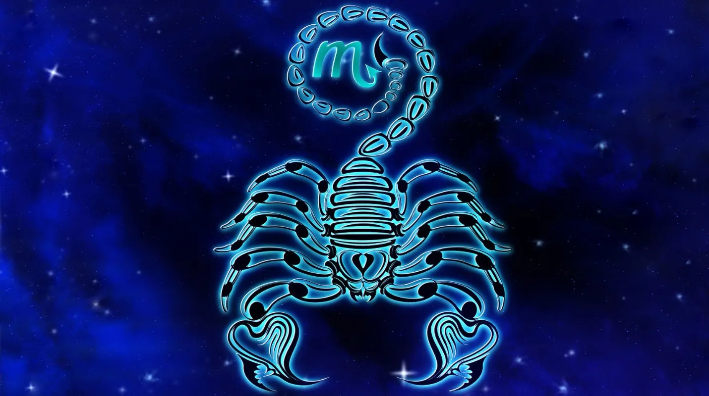

LEO

Las personas nacidas en Leo entre el 22 de julio y el 23 de agosto suelen tener, según la astrología, un carácter fiel, bondadoso, optimista, generoso y extrovertido. Son ambiciosos, valientes, independientes y seguros de sí mismos. Por otro lado, como punto negativo, los Leo son idealistas, inteligentes, tercos, un poco arrogantes, orgullosos y pueden tener mal humor.
El signo de Leo es fijo y de fuego, también el signo más dominante del zodíaco. Creativo y abierto, tiene ambición, valor, fuerza, autonomía y total seguridad en sí mismo: sabe dónde quiere llegar y nada ni nadie podrá evitarlo. En contrapartida, sus puntos negativos pueden ser tantos como las virtudes que tiene: vanidad, egocentrismo, arrogancia, impostura y un genio de mil demonios, entre otros defectos. Los Leones son entusiastas, creativos y muchas veces comprensivos con las circunstancias de los demás; adoran los lujos y la aventura; correr riesgos les motiva. También se caracterizan por tener un elevado concepto de todo, especialmente, de sí mismos, por eso huyen de la vulgaridad.
Como disfrutan con la emoción de las nuevas experiencias y adoran estar en medio de mucha gente, es muy posible que alternen varios círculos sociales y de amistad, aunque nunca olvidarán a sus verdaderas amistades. En el amor, Leo es romántico, algo caprichoso, poco fiel y prisionero de la belleza. Además, no le falta sinceridad, por lo menos mientras dura el amor, no más. Finalmente, le encantan las relaciones sexuales, así que es muy posible que tenga diversas y diferentes parejas durante su vida.
ESCORPIO
Los Escorpio signo que abarca desde el 24 de octubre hasta el 22 de noviembre se definen, según el zodiaco occidental, como personas con una gran cortesía, observadoras, buenas consejeras y con mucha fuerza de voluntad y capacidad para razonar. Pero también son envidiosas, posesivas, impulsivas y desconfiadas.
Escorpio es un signo fijo y de agua; su potencia y energía emocional son únicas en todo el zodíaco. Tiene mucha imaginación e intuición, además de una gran capacidad para el análisis, fuerza de voluntad y firmeza, aunque también es muy sensible y emocional consigo mismo y con el entorno. Además, Escorpio desea ejercer el control, acumulando poder; suele tener una profunda inteligencia fruto de su poder de concentración. Escorpio tiende a ir a la raíz, a lo esencial y a lo que pertenece al mundo inconsciente.
Un Escorpión es inmensamente enérgico y su carácter puede dar lugar a grandes ventajas o no menos grandes peligros para los demás. De hecho, sus puntos negativos son la agresión, los celos y el resentimiento. No soporta la deslealtad y tampoco perdona una ofensa; es más, seguramente busque venganza... y es muy mal enemigo, así que cuidadito con hacerle daño. Las Escorpio son personas muy sensuales y apasionadas; para ellas el acto del amor es algo espiritual: sienten emociones a las que otros signos ni se pueden acercar. La intensidad de sus sentimientos hace que sus relaciones amorosas sean profundas, mágicas, y a veces, por desgracia, fatales.